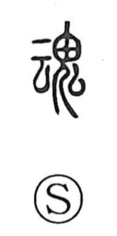

魂

Kun: tamashii | On: kon
soul ・ spirit ・ mind
Explanation
魂 joins 云, the earlier writing of 雲, with 鬼, a spirit of the dead. 云 pictures cloud vapour. A person's soul was thought to become like that drifting vapour after death and enter the spirit world. The two components give form to this elusive presence.
The distinction between 魂 and 魄 sets the cloud-like soul beside another aspect of the dead. In 魄, 白 represents a skull from which the colour of life has gone. 魂 is associated with the more active, yang breath, while 魄 belongs to the yin aspect.
云 and 魂 also have related sounds. Beyond the departed soul, 魂 can name a person's inward spirit, deepest feeling, or the animating force expressed in an activity.